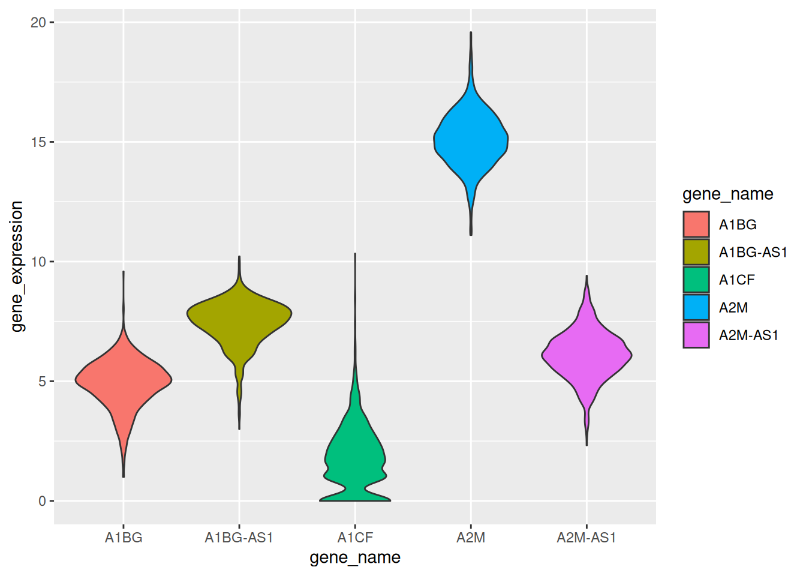
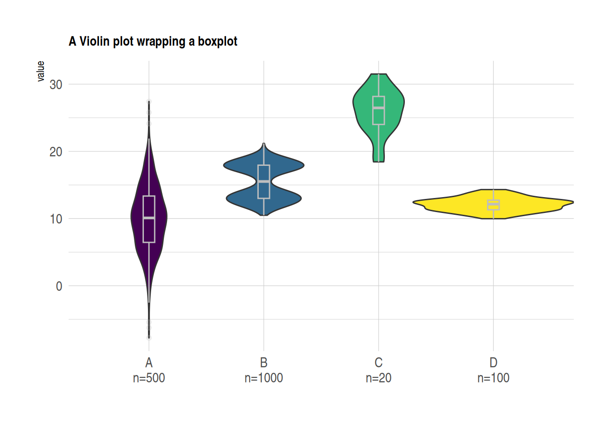
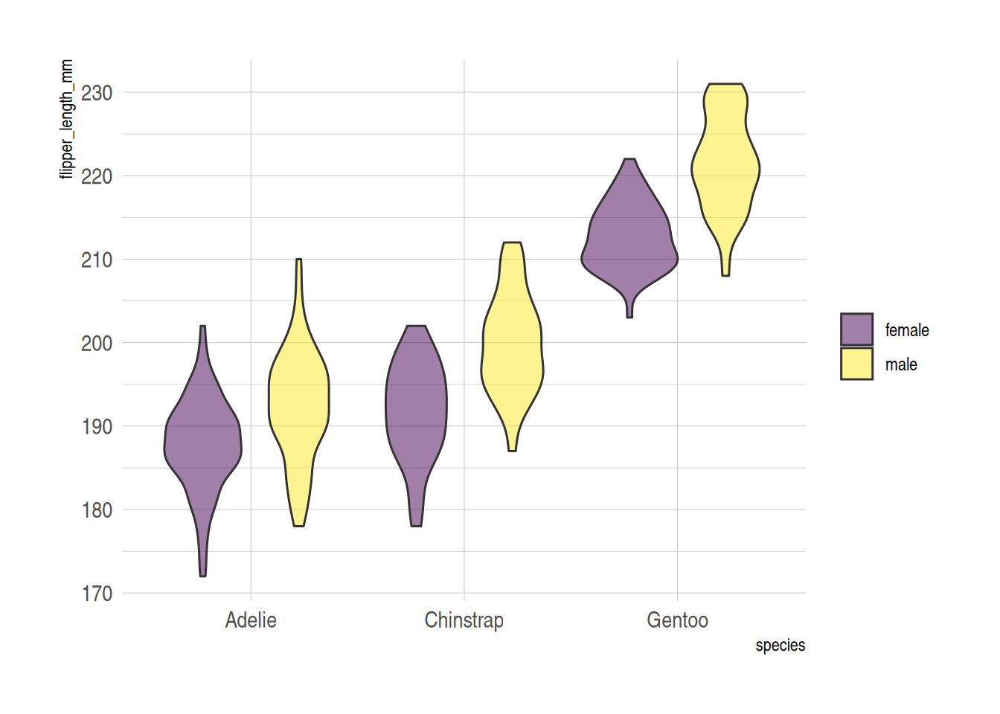

A violin plot combines elements of a density plot and a box plot to visualize data distribution. It displays key statistical information, including the median, quartiles, minimum, and maximum values. Violin plots are particularly useful for comparing distributions across different groups, offering a more intuitive representation than traditional box plots by revealing the shape of the data distribution.
Box Component: The white dot/line represents the median, while the black bar indicates the interquartile range (IQR).
Kernel Density Component: Shows the density of data points at different positions, providing insights into clustering patterns.
Example
Setup
System Requirements: Cross-platform (Linux/MacOS/Windows)
# Downloading packages -------------------------------------------------------
- Downloading gghalves from CRAN ... OK [230.4 Kb in 0.5s]
Successfully downloaded 1 package in 1.5 seconds.
The following package(s) will be installed:
- gghalves [0.1.4]
These packages will be installed into "~/work/Bizard/Bizard/renv/library/linux-ubuntu-noble/R-4.4/x86_64-pc-linux-gnu".
# Installing packages --------------------------------------------------------
- Installing gghalves ... OK [installed binary and cached in 0.69s]
Successfully installed 1 package in 0.72 seconds.
# Downloading packages -------------------------------------------------------
- Downloading hrbrthemes from CRAN ... OK [846.9 Kb in 0.23s]
- Downloading extrafont from CRAN ... OK [53.6 Kb in 0.29s]
- Downloading extrafontdb from CRAN ... OK [6.8 Kb in 0.26s]
- Downloading Rttf2pt1 from CRAN ... OK [267.4 Kb in 0.25s]
- Downloading gdtools from CRAN ... OK [203.8 Kb in 0.23s]
- Downloading fontquiver from CRAN ... OK [2.2 Mb in 0.25s]
- Downloading fontBitstreamVera from CRAN ... OK [683.1 Kb in 0.27s]
- Downloading fontLiberation from CRAN ... OK [4.3 Mb in 0.33s]
Successfully downloaded 8 packages in 3.3 seconds.
The following package(s) will be installed:
- extrafont [0.19]
- extrafontdb [1.0]
- fontBitstreamVera [0.1.1]
- fontLiberation [0.1.0]
- fontquiver [0.2.1]
- gdtools [0.4.1]
- hrbrthemes [0.8.7]
- Rttf2pt1 [1.3.12]
These packages will be installed into "~/work/Bizard/Bizard/renv/library/linux-ubuntu-noble/R-4.4/x86_64-pc-linux-gnu".
# Installing packages --------------------------------------------------------
- Installing extrafontdb ... OK [installed binary and cached in 0.21s]
- Installing Rttf2pt1 ... OK [installed binary and cached in 0.21s]
- Installing extrafont ... OK [installed binary and cached in 0.21s]
- Installing fontBitstreamVera ... OK [installed binary and cached in 0.22s]
- Installing fontLiberation ... OK [installed binary and cached in 0.3s]
- Installing fontquiver ... OK [installed binary and cached in 0.25s]
- Installing gdtools ... OK [installed binary and cached in 0.41s]
- Installing hrbrthemes ... OK [installed binary and cached in 0.78s]
Successfully installed 8 packages in 2.9 seconds.
if (!requireNamespace("viridis", quietly =TRUE)) {install.packages("viridis")}if (!requireNamespace("ggstatsplot", quietly =TRUE)) {install.packages("ggstatsplot")}
# Downloading packages -------------------------------------------------------
- Downloading ggstatsplot from CRAN ... OK [3.2 Mb in 0.64s]
- Downloading correlation from CRAN ... OK [1.5 Mb in 0.36s]
- Downloading bayestestR from CRAN ... OK [1 Mb in 0.33s]
- Downloading insight from CRAN ... OK [2.2 Mb in 0.19s]
- Downloading datawizard from CRAN ... OK [1.1 Mb in 0.25s]
- Downloading parameters from CRAN ... OK [2.1 Mb in 0.18s]
- Downloading ggcorrplot from CRAN ... OK [28.3 Kb in 0.35s]
- Downloading reshape2 from CRAN ... OK [120.2 Kb in 0.2s]
- Downloading ggrepel from CRAN ... OK [283.3 Kb in 0.17s]
- Downloading ggside from CRAN ... OK [2.6 Mb in 0.27s]
- Downloading paletteer from CRAN ... OK [425.9 Kb in 0.26s]
- Downloading prismatic from CRAN ... OK [724 Kb in 0.3s]
- Downloading patchwork from CRAN ... OK [3.2 Mb in 0.33s]
- Downloading performance from CRAN ... OK [3 Mb in 0.27s]
- Downloading statsExpressions from CRAN ... OK [3.2 Mb in 0.37s]
- Downloading afex from CRAN ... OK [2.6 Mb in 0.27s]
- Downloading lmerTest from CRAN ... OK [526 Kb in 0.22s]
- Downloading BayesFactor from CRAN ... OK [6.8 Mb in 0.41s]
- Downloading coda from CRAN ... OK [320.9 Kb in 0.16s]
- Downloading pbapply from CRAN ... OK [98 Kb in 0.15s]
- Downloading hypergeo from CRAN ... OK [346.5 Kb in 0.25s]
- Downloading elliptic from CRAN ... OK [1.2 Mb in 0.19s]
- Downloading contfrac from CRAN ... OK [23.9 Kb in 0.21s]
- Downloading deSolve from CRAN ... OK [2.2 Mb in 0.17s]
- Downloading effectsize from CRAN ... OK [792.2 Kb in 0.27s]
- Downloading PMCMRplus from CRAN ... OK [1.2 Mb in 0.28s]
- Downloading gmp from CRAN ... OK [323.4 Kb in 0.16s]
- Downloading Rmpfr from CRAN ... OK [1.2 Mb in 0.16s]
- Downloading SuppDists from CRAN ... OK [232.7 Kb in 0.16s]
- Downloading kSamples from CRAN ... OK [246.1 Kb in 0.33s]
- Downloading BWStest from CRAN ... OK [147.9 Kb in 0.26s]
- Downloading rstantools from CRAN ... OK [166.2 Kb in 0.16s]
- Downloading desc from CRAN ... OK [326.9 Kb in 0.15s]
- Downloading RcppParallel from CRAN ... OK [1.9 Mb in 0.18s]
- Downloading WRS2 from CRAN ... OK [945.6 Kb in 0.28s]
- Downloading reshape from CRAN ... OK [165.6 Kb in 0.27s]
- Downloading zeallot from CRAN ... OK [57.7 Kb in 0.18s]
Successfully downloaded 37 packages in 14 seconds.
The following package(s) will be installed:
- afex [1.4-1]
- BayesFactor [0.9.12-4.7]
- bayestestR [0.15.2]
- BWStest [0.2.3]
- coda [0.19-4.1]
- contfrac [1.1-12]
- correlation [0.8.7]
- datawizard [1.0.1]
- desc [1.4.3]
- deSolve [1.40]
- effectsize [1.0.0]
- elliptic [1.4-0]
- ggcorrplot [0.1.4.1]
- ggrepel [0.9.6]
- ggside [0.3.1]
- ggstatsplot [0.13.0]
- gmp [0.7-5]
- hypergeo [1.2-13]
- insight [1.1.0]
- kSamples [1.2-10]
- lmerTest [3.1-3]
- paletteer [1.6.0]
- parameters [0.24.2]
- patchwork [1.3.0]
- pbapply [1.7-2]
- performance [0.13.0]
- PMCMRplus [1.9.12]
- prismatic [1.1.2]
- RcppParallel [5.1.10]
- reshape [0.8.9]
- reshape2 [1.4.4]
- Rmpfr [1.0-0]
- rstantools [2.4.0]
- statsExpressions [1.6.2]
- SuppDists [1.1-9.8]
- WRS2 [1.1-6]
- zeallot [0.1.0]
These packages will be installed into "~/work/Bizard/Bizard/renv/library/linux-ubuntu-noble/R-4.4/x86_64-pc-linux-gnu".
# Installing packages --------------------------------------------------------
- Installing insight ... OK [installed binary and cached in 0.28s]
- Installing datawizard ... OK [installed binary and cached in 0.27s]
- Installing bayestestR ... OK [installed binary and cached in 0.28s]
- Installing parameters ... OK [installed binary and cached in 0.33s]
- Installing correlation ... OK [installed binary and cached in 0.3s]
- Installing reshape2 ... OK [installed binary and cached in 0.41s]
- Installing ggcorrplot ... OK [installed binary and cached in 0.67s]
- Installing ggrepel ... OK [installed binary and cached in 0.73s]
- Installing ggside ... OK [installed binary and cached in 0.72s]
- Installing prismatic ... OK [installed binary and cached in 0.23s]
- Installing paletteer ... OK [installed binary and cached in 0.47s]
- Installing patchwork ... OK [installed binary and cached in 0.78s]
- Installing performance ... OK [installed binary and cached in 0.31s]
- Installing lmerTest ... OK [installed binary and cached in 1.5s]
- Installing afex ... OK [installed binary and cached in 1.6s]
- Installing coda ... OK [installed binary and cached in 0.24s]
- Installing pbapply ... OK [installed binary and cached in 0.22s]
- Installing elliptic ... OK [installed binary and cached in 0.24s]
- Installing contfrac ... OK [installed binary and cached in 0.2s]
- Installing deSolve ... OK [installed binary and cached in 0.27s]
- Installing hypergeo ... OK [installed binary and cached in 0.24s]
- Installing BayesFactor ... OK [installed binary and cached in 1.5s]
- Installing effectsize ... OK [installed binary and cached in 0.32s]
- Installing gmp ... OK [installed binary and cached in 0.25s]
- Installing Rmpfr ... OK [installed binary and cached in 0.49s]
- Installing SuppDists ... OK [installed binary and cached in 0.21s]
- Installing kSamples ... OK [installed binary and cached in 0.22s]
- Installing BWStest ... OK [installed binary and cached in 0.37s]
- Installing PMCMRplus ... OK [installed binary and cached in 0.74s]
- Installing desc ... OK [installed binary and cached in 0.22s]
- Installing RcppParallel ... OK [installed binary and cached in 0.3s]
- Installing rstantools ... OK [installed binary and cached in 0.22s]
- Installing reshape ... OK [installed binary and cached in 0.29s]
- Installing WRS2 ... OK [installed binary and cached in 0.31s]
- Installing zeallot ... OK [installed binary and cached in 0.21s]
- Installing statsExpressions ... OK [installed binary and cached in 0.75s]
- Installing ggstatsplot ... OK [installed binary and cached in 0.89s]
Successfully installed 37 packages in 19 seconds.
if (!requireNamespace("palmerpenguins", quietly =TRUE)) {install.packages("palmerpenguins")}
# Downloading packages -------------------------------------------------------
- Downloading palmerpenguins from CRAN ... OK [2.9 Mb in 0.19s]
Successfully downloaded 1 package in 0.3 seconds.
The following package(s) will be installed:
- palmerpenguins [0.1.1]
These packages will be installed into "~/work/Bizard/Bizard/renv/library/linux-ubuntu-noble/R-4.4/x86_64-pc-linux-gnu".
# Installing packages --------------------------------------------------------
- Installing palmerpenguins ... OK [installed binary and cached in 0.25s]
Successfully installed 1 package in 0.3 seconds.
We used the built-in R datasets (iris, penguins) and the TCGA-BRCA.htseq_counts.tsv dataset from UCSC Xena DATASETS. Selected genes were chosen for demonstration purposes.
# Load the TCGA-BRCA gene expression dataset from a processed CSV file data_counts <-read.csv("https://raw.githubusercontent.com/DrRobinLuo/Bizard/refs/heads/main/files/TCGA-BRCA.htseq_counts_processed.csv")# Load built-in R dataset irisdata_wide <- iris[ , 1:4] # Take the data in columns 1-4 of the iris database as an example# Load built-in R dataset penguinsdata("penguins", package ="palmerpenguins")data_penguins <-drop_na(penguins) # Remove missing values# Manually create a demonstration dataset with grouped values data <-data.frame(name=c( rep("A",500), rep("B",500), rep("B",500), rep("C",20), rep('D', 100) ),value=c( rnorm(500, 10, 5), rnorm(500, 13, 1), rnorm(500, 18, 1), rnorm(20, 25, 4), rnorm(100, 12, 1) ) )sample_size <- data %>%group_by(name) %>%summarize(num=n()) # Compute the sample size for each group
Visualization
1. Basic Violin Plot
Example 1: Basic Violin Plot with Manually Created Data
Example 2: Basic Violin Plot with the iris Dataset
# Transform the `iris` dataset from wide format to long format. Use the gather function to collect the data in each column into two new columns named "MesureType" and "Val", so that one row represents one observation.data_long_iris <- data_wide %>%gather(key ="MeasureType", value ="Value") ggplot(data_long_iris, aes(x = MeasureType, y = Value, fill = MeasureType)) +geom_violin()
Figure 2: Basic Violin Plot using the iris dataset
Example 3: Violin Plot with TCGA-BRCA Gene Expression Data
example_counts1 <- data_counts[1:5,] %>%gather(key ="sample",value ="gene_expression",3:1219) # Select five example genes for visualization: A1BG, A1BG-AS1, A1CF, A2M, and A2M-AS1.ggplot(example_counts1, aes(x=gene_name, y=gene_expression, fill=gene_name)) +geom_violin()

Figure 3: Basic Violin Plot using the TCGA-BRCA dataset
2. Horizontal violin plot
The x and y axes can be flipped using coord_flip().
example_counts2 <- data_counts[1:6,] %>%gather(key ="sample",value ="gene_expression",3:1219) %>%mutate(gene_name=fct_reorder(gene_name,gene_expression ))ggplot(example_counts2, aes(x=gene_name, y=gene_expression, fill=gene_name, color=gene_name)) +geom_violin() +scale_fill_viridis(discrete=TRUE) +scale_color_viridis(discrete=TRUE) +theme_ipsum() +# Improve plot appearancetheme(legend.position="none" ) +coord_flip() +# flip the x and y axesxlab("") +ylab("Assigned Probability (%)")
Figure 4: Horizontal Violin Plot using the TCGA-BRCA dataset
3. Violin Plot with Boxplot
In practical visualization applications, a box plot can be added to a violin plot using geom_boxplot(), which helps in visually comparing the distribution of the data.
example_data <- data %>%left_join(sample_size) %>%mutate(myaxis =paste0(name, "\n", "n=", num)) # The `myaxis` variable is created to display sample size on the x-axis. ggplot(example_data, aes(x=myaxis, y=value, fill=name)) +geom_violin(width=1.4) +geom_boxplot( width=0.1,color="grey", alpha=0.2) +# Draw a box plot. A small width value makes the box plot inside the violin plot.scale_fill_viridis(discrete =TRUE) +theme_ipsum() +# Beautify the graphtheme(legend.position="none",plot.title =element_text(size=11) ) +ggtitle("A Violin plot wrapping a boxplot") +# Set the titlexlab("")

Figure 5: Violin Plot with Boxplot
Another Violin Plot with Box Plot using the TCGA-BRCA Gene Expression Data
Figure 6: Violin Plot with Boxplot using the TCGA-BRCA dataset
4. Grouped Violin Plot
On the basis of the basic violin plot, we can achieve intra-group comparison by setting the fill value.
The example below demonstrates intra-group comparison using the fill aesthetic. In this case, the penguins dataset is used. The x variable represents the species, and fill=sex creates an intra-group classification to visualize the comparison of flipper lengths within each species, grouped by gender.
ggplot(data_penguins, aes(fill=sex, y=flipper_length_mm, x=species)) +# Use X as the major classification and fill as the intra-group classificationgeom_violin(position="dodge", alpha=0.5, outlier.colour="transparent") +scale_fill_viridis(discrete=T, name="") +theme_ipsum()

Figure 7: Grouped Violin Plot using the penguins dataset
5. Half-Violin Plot
A half-violin plot is useful for visualizing a large amount of data in a compact form. We can use the geom_half_violin function to display two groups separately.
In the following example, we visualize the flipper lengths of penguins for both species and genders, by plotting female and male penguins on opposite sides of the plot.
# Separate the data for female and male penguinsdata_female <- data_penguins %>%filter(sex =="female")data_male <- data_penguins %>%filter(sex =="male")# Plot the half-violin plot for both groups (females on the right and males on the left)ggplot() +geom_half_violin(data = data_female,aes(y = flipper_length_mm, x = species),position =position_dodge(width =1),scale ='width',colour =NA,fill ="#9370DB",alpha =0.8, ## Set transparencyside ="r" ) +geom_half_violin(data = data_male,aes(y = flipper_length_mm, x = species),position =position_dodge(width =1),scale ='width',colour =NA,fill ="#FFFF00",alpha =0.6,side ="l" )
Figure 8: Half-Violin Plot using the penguins dataset
6. Violin Plot using the ggstatsplot Package
The ggstatsplot package extends ggplot2 by adding powerful statistical visualizations. The ggbetweenstats() function allows the creation of combined violin plots, box plots, and scatter plots.
In the following example, we visualize the distribution of bill lengths across different penguin species using the penguins dataset. We further enhance the plot’s aesthetics using the theme() function.
plt <-ggbetweenstats(data = data_penguins,x = species,y = bill_length_mm) +# Beautificationlabs( ## Add labels and titlex ="Penguins Species",y ="Bill Length",title ="Distribution of bill length across penguins species" ) +theme(axis.ticks =element_blank(),axis.line =element_line(colour ="grey50"),panel.grid =element_line(color ="#b4aea9"),panel.grid.minor =element_blank(),panel.grid.major.x =element_blank(),panel.grid.major.y =element_line(linetype ="dashed"),panel.background =element_rect(fill ="#fbf9f4", color ="#fbf9f4"),plot.background =element_rect(fill ="#fbf9f4", color ="#fbf9f4") )plt
Figure 9: Violin Plot using the ggstatsplot Package
Application
1. Basic Violin Plot
Figure 10: Applications of Basic Violin Plot
Figure 10 e is a violin plot of the relative abundances of circRNAs in seven types of cancer tissues and their corresponding normal tissues [1].
2. Grouped Violin Plot
Figure 11: Applications of Grouped Violin Plot
The above violin plot analyzes and compares the levels and distributions of 31 proteins and mRNAs in single A549 cells [2].
3. Half-Violin Plot
Figure 12: Applications of Half-Violin Plot
Figure 12 E uses a half-violin plot to analyze the clone size distribution of WT clones in WT intestines (left) or M−/+ intestines (middle and right figures) [3].
4. Violin Plot with Boxplot
Figure 13: Applications of Violin Plot with Boxplot
Figure 13 D shows the expected median MSD and distribution of droplets attached to the substrate (noise) and in water (stimulation), as well as the nanoscale RMS displacement [4].
Reference
[1] Zheng Q, Bao C, Guo W, Li S, Chen J, Chen B, Luo Y, Lyu D, Li Y, Shi G, Liang L, Gu J, He X, Huang S. Circular RNA profiling reveals an abundant circHIPK3 that regulates cell growth by sponging multiple miRNAs. Nat Commun. 2016 Apr 6;7:11215. doi: 10.1038/ncomms11215. PMID: 27050392; PMCID: PMC4823868.
[2] Gong H, Wang X, Liu B, Boutet S, Holcomb I, Dakshinamoorthy G, Ooi A, Sanada C, Sun G, Ramakrishnan R. Single-cell protein-mRNA correlation analysis enabled by multiplexed dual-analyte co-detection. Sci Rep. 2017 Jun 5;7(1):2776. doi: 10.1038/s41598-017-03057-5. PMID: 28584233; PMCID: PMC5459813.
[3] Kolahgar G, Suijkerbuijk SJ, Kucinski I, Poirier EZ, Mansour S, Simons BD, Piddini E. Cell Competition Modifies Adult Stem Cell and Tissue Population Dynamics in a JAK-STAT-Dependent Manner. Dev Cell. 2015 Aug 10;34(3):297-309. doi: 10.1016/j.devcel.2015.06.010. Epub 2015 Jul 23. PMID: 26212135; PMCID: PMC4537514.
[4] Cribb JA, Osborne LD, Beicker K, Psioda M, Chen J, O’Brien ET, Taylor Ii RM, Vicci L, Hsiao JP, Shao C, Falvo M, Ibrahim JG, Wood KC, Blobe GC, Superfine R. An Automated High-throughput Array Microscope for Cancer Cell Mechanics. Sci Rep. 2016 Jun 6;6:27371. doi: 10.1038/srep27371. PMID: 27265611; PMCID: PMC4893602.
[6] H. Wickham. ggplot2: Elegant Graphics for Data Analysis. Springer-Verlag New York, 2016.
[7] Wickham H, François R, Henry L, Müller K, Vaughan D (2023). dplyr: A Grammar of Data Manipulation. R package version 1.1.4, https://CRAN.R-project.org/package=dplyr.
[12] Patil, I. (2021). Visualizations with statistical details: The ‘ggstatsplot’ approach. Journal of Open Source Software, 6(61), 3167, doi:10.21105/joss.03167
[13] Horst AM, Hill AP, Gorman KB (2020). palmerpenguins: Palmer Archipelago (Antarctica) penguin data. R package version 0.1.0. https://allisonhorst.github.io/palmerpenguins/. doi: 10.5281/zenodo.3960218.
Contributors
Editor: Yinying Chai
Reviewers: ShiXiang Wang, Peng Luo, Hong Yang, KeXin Li, Ying Shi